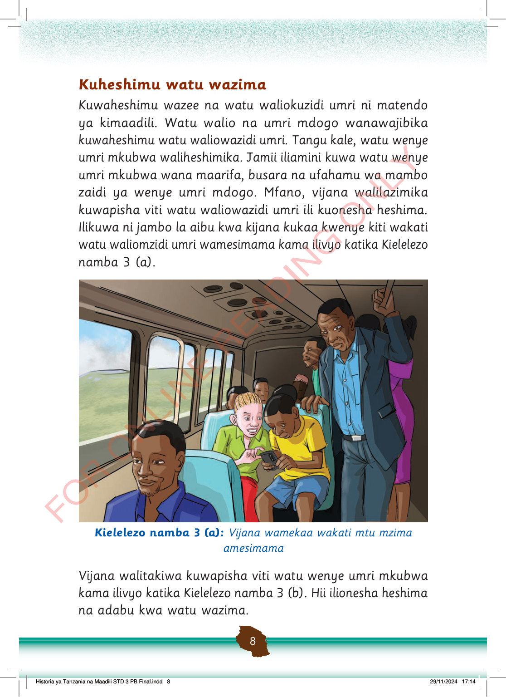

Kuheshimu watu wazima
Kuwaheshimu wazee na watu waliokuzidi umri ni matendo ya kimaadili.
Watu walio na umri mdogo wanawajibika kuwaheshimu watu waliowazidi umri.
Tangu kale, watu wenye umri mkubwa waliheshimika.
Jamii iliamini kuwa watu wenye umri mkubwa wana maarifa, busara na ufahamu wa mambo zaidi ya wenye umri mdogo.
Mfano, vijana walilazimika kuwapisha viti watu waliowazidi umri ili kuonesha heshima.
Ilikuwa ni jambo la aibu kwa kijana kukaa kwenye kiti wakati watu waliomzidi umri wamesimama kama ilivyo katika Kielelezo namba 3 (a).
Ndani ya basi, vijana wawili wamekaa wakitazama simu huku mtu mzima amesimama. Hii inaonyesha kukosa kuwaheshimu watu wazima kwa kutowapisha kiti.
Kielelezo namba 3 (a): Vijana wamekaa wakati mtu mzima amesimama
Vijana walitakiwa kuwapisha viti watu wenye umri mkubwa kama ilivyo katika Kielelezo namba 3 (b).
Hii ilionesha heshima na adabu kwa watu wazima.